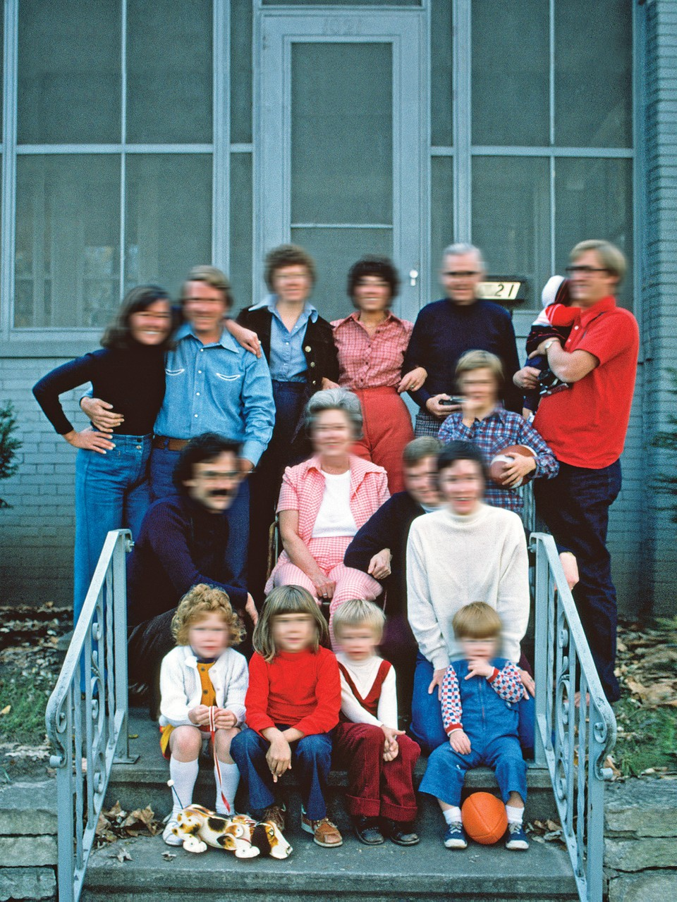
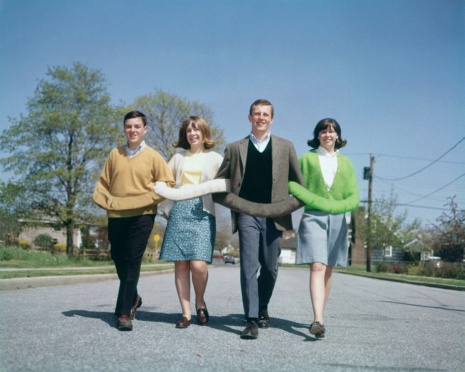

David Brooks
2020-03
The family structure we’ve held up as the cultural ideal for the past half century has been a catastrophe for many. It’s time to figure out better ways to live together.
The scene is one many of us have somewhere in our family history: Dozens of people celebrating Thanksgiving or some other holiday around a makeshift stretch of family tables—siblings, cousins, aunts, uncles, great-aunts. The grandparents are telling the old family stories for the 37th time. “It was the most beautiful place you’ve ever seen in your life,” says one, remembering his first day in America. “There were lights everywhere … It was a celebration of light! I thought they were for me.”
The oldsters start squabbling about whose memory is better. “It was cold that day,” one says about some faraway memory. “What are you talking about? It was May, late May,” says another. The young children sit wide-eyed, absorbing family lore and trying to piece together the plotline of the generations.
After the meal, there are piles of plates in the sink, squads of children conspiring mischievously in the basement. Groups of young parents huddle in a hallway, making plans. The old men nap on couches, waiting for dessert. It’s the extended family in all its tangled, loving, exhausting glory.
This particular family is the one depicted in Barry Levinson’s 1990 film, Avalon, based on his own childhood in Baltimore. Five brothers came to America from Eastern Europe around the time of World War I and built a wallpaper business. For a while they did everything together, like in the old country. But as the movie goes along, the extended family begins to split apart. Some members move to the suburbs for more privacy and space. One leaves for a job in a different state. The big blowup comes over something that seems trivial but isn’t: The eldest of the brothers arrives late to a Thanksgiving dinner to find that the family has begun the meal without him.
“You cut the turkey without me?” he cries. “Your own flesh and blood! … You cut the turkey?” The pace of life is speeding up. Convenience, privacy, and mobility are more important than family loyalty. “The idea that they would eat before the brother arrived was a sign of disrespect,” Levinson told me recently when I asked him about that scene. “That was the real crack in the family. When you violate the protocol, the whole family structure begins to collapse.”
As the years go by in the movie, the extended family plays a smaller and smaller role. By the 1960s, there’s no extended family at Thanksgiving. It’s just a young father and mother and their son and daughter, eating turkey off trays in front of the television. In the final scene, the main character is living alone in a nursing home, wondering what happened. “In the end, you spend everything you’ve ever saved, sell everything you’ve ever owned, just to exist in a place like this.”
“In my childhood,” Levinson told me, “you’d gather around the grandparents and they would tell the family stories … Now individuals sit around the TV, watching other families’ stories.” The main theme of Avalon, he said, is “the decentralization of the family. And that has continued even further today. Once, families at least gathered around the television. Now each person has their own screen.”
This is the story of our times—the story of the family, once a dense cluster of many siblings and extended kin, fragmenting into ever smaller and more fragile forms. The initial result of that fragmentation, the nuclear family, didn’t seem so bad. But then, because the nuclear family is so brittle, the fragmentation continued. In many sectors of society, nuclear families fragmented into single-parent families, single-parent families into chaotic families or no families.
If you want to summarize the changes in family structure over the past century, the truest thing to say is this: We’ve made life freer for individuals and more unstable for families. We’ve made life better for adults but worse for children. We’ve moved from big, interconnected, and extended families, which helped protect the most vulnerable people in society from the shocks of life, to smaller, detached nuclear families (a married couple and their children), which give the most privileged people in society room to maximize their talents and expand their options. The shift from bigger and interconnected extended families to smaller and detached nuclear families ultimately led to a familial system that liberates the rich and ravages the working-class and the poor.
This article is about that process, and the devastation it has wrought—and about how Americans are now groping to build new kinds of family and find better ways to live.
Part I
The Era of Extended Clans
Through the early parts of American history, most people lived in what, by today’s standards, were big, sprawling households. In 1800, three-quarters of American workers were farmers. Most of the other quarter worked in small family businesses, like dry-goods stores. People needed a lot of labor to run these enterprises. It was not uncommon for married couples to have seven or eight children. In addition, there might be stray aunts, uncles, and cousins, as well as unrelated servants, apprentices, and farmhands. (On some southern farms, of course, enslaved African Americans were also an integral part of production and work life.)
Steven Ruggles, a professor of history and population studies at the University of Minnesota, calls these “corporate families”—social units organized around a family business. According to Ruggles, in 1800, 90 percent of American families were corporate families. Until 1850, roughly three-quarters of Americans older than 65 lived with their kids and grandkids. Nuclear families existed, but they were surrounded by extended or corporate families.
Extended families have two great strengths. The first is resilience. An extended family is one or more families in a supporting web. Your spouse and children come first, but there are also cousins, in-laws, grandparents—a complex web of relationships among, say, seven, 10, or 20 people. If a mother dies, siblings, uncles, aunts, and grandparents are there to step in. If a relationship between a father and a child ruptures, others can fill the breach. Extended families have more people to share the unexpected burdens—when a kid gets sick in the middle of the day or when an adult unexpectedly loses a job.
A detached nuclear family, by contrast, is an intense set of relationships among, say, four people. If one relationship breaks, there are no shock absorbers. In a nuclear family, the end of the marriage means the end of the family as it was previously understood.
The second great strength of extended families is their socializing force. Multiple adults teach children right from wrong, how to behave toward others, how to be kind. Over the course of the 18th and 19th centuries, industrialization and cultural change began to threaten traditional ways of life. Many people in Britain and the United States doubled down on the extended family in order to create a moral haven in a heartless world. According to Ruggles, the prevalence of extended families living together roughly doubled from 1750 to 1900, and this way of life was more common than at any time before or since.
During the Victorian era, the idea of “hearth and home” became a cultural ideal. The home “is a sacred place, a vestal temple, a temple of the hearth watched over by Household Gods, before whose faces none may come but those whom they can receive with love,” the great Victorian social critic John Ruskin wrote. This shift was led by the upper-middle class, which was coming to see the family less as an economic unit and more as an emotional and moral unit, a rectory for the formation of hearts and souls.
But while extended families have strengths, they can also be exhausting and stifling. They allow little privacy; you are forced to be in daily intimate contact with people you didn’t choose. There’s more stability but less mobility. Family bonds are thicker, but individual choice is diminished. You have less space to make your own way in life. In the Victorian era, families were patriarchal, favoring men in general and first-born sons in particular.
As factories opened in the big U.S. cities, in the late 19th and early 20th centuries, young men and women left their extended families to chase the American dream. These young people married as soon as they could. A young man on a farm might wait until 26 to get married; in the lonely city, men married at 22 or 23. From 1890 to 1960, the average age of first marriage dropped by 3.6 years for men and 2.2 years for women.
The families they started were nuclear families. The decline of multigenerational cohabiting families exactly mirrors the decline in farm employment. Children were no longer raised to assume economic roles—they were raised so that at adolescence they could fly from the nest, become independent, and seek partners of their own. They were raised not for embeddedness but for autonomy. By the 1920s, the nuclear family with a male breadwinner had replaced the corporate family as the dominant family form. By 1960, 77.5 percent of all children were living with their two parents, who were married, and apart from their extended family.
The Short, Happy Life of the Nuclear Family
For a time, it all seemed to work. From 1950 to 1965, divorce rates dropped, fertility rates rose, and the American nuclear family seemed to be in wonderful shape. And most people seemed prosperous and happy. In these years, a kind of cult formed around this type of family—what McCall’s, the leading women’s magazine of the day, called “togetherness.” Healthy people lived in two-parent families. In a 1957 survey, more than half of the respondents said that unmarried people were “sick,” “immoral,” or “neurotic.”
During this period, a certain family ideal became engraved in our minds: a married couple with 2.5 kids. When we think of the American family, many of us still revert to this ideal. When we have debates about how to strengthen the family, we are thinking of the two-parent nuclear family, with one or two kids, probably living in some detached family home on some suburban street. We take it as the norm, even though this wasn’t the way most humans lived during the tens of thousands of years before 1950, and it isn’t the way most humans have lived during the 55 years since 1965.
Today, only a minority of American households are traditional two-parent nuclear families and only one-third of American individuals live in this kind of family. That 1950–65 window was not normal. It was a freakish historical moment when all of society conspired, wittingly and not, to obscure the essential fragility of the nuclear family.

For one thing, most women were relegated to the home. Many corporations, well into the mid-20th century, barred married women from employment: Companies would hire single women, but if those women got married, they would have to quit. Demeaning and disempowering treatment of women was rampant. Women spent enormous numbers of hours trapped inside the home under the headship of their husband, raising children.
For another thing, nuclear families in this era were much more connected to other nuclear families than they are today—constituting a “modified extended family,” as the sociologist Eugene Litwak calls it, “a coalition of nuclear families in a state of mutual dependence.” Even as late as the 1950s, before television and air-conditioning had fully caught on, people continued to live on one another’s front porches and were part of one another’s lives. Friends felt free to discipline one another’s children.
In his book The Lost City, the journalist Alan Ehrenhalt describes life in mid-century Chicago and its suburbs:
To be a young homeowner in a suburb like Elmhurst in the 1950s was to participate in a communal enterprise that only the most determined loner could escape: barbecues, coffee klatches, volleyball games, baby-sitting co-ops and constant bartering of household goods, child rearing by the nearest parents who happened to be around, neighbors wandering through the door at any hour without knocking—all these were devices by which young adults who had been set down in a wilderness of tract homes made a community. It was a life lived in public.
Finally, conditions in the wider society were ideal for family stability. The postwar period was a high-water mark of church attendance, unionization, social trust, and mass prosperity—all things that correlate with family cohesion. A man could relatively easily find a job that would allow him to be the breadwinner for a single-income family. By 1961, the median American man age 25 to 29 was earning nearly 400 percent more than his father had earned at about the same age.
In short, the period from 1950 to 1965 demonstrated that a stable society can be built around nuclear families—so long as women are relegated to the household, nuclear families are so intertwined that they are basically extended families by another name, and every economic and sociological condition in society is working together to support the institution.
Disintegration
But these conditions did not last. The constellation of forces that had briefly shored up the nuclear family began to fall away, and the sheltered family of the 1950s was supplanted by the stressed family of every decade since. Some of the strains were economic. Starting in the mid-’70s, young men’s wages declined, putting pressure on working-class families in particular. The major strains were cultural. Society became more individualistic and more self-oriented. People put greater value on privacy and autonomy. A rising feminist movement helped endow women with greater freedom to live and work as they chose.
A study of women’s magazines by the sociologists Francesca Cancian and Steven L. Gordon found that from 1900 to 1979, themes of putting family before self dominated in the 1950s: “Love means self-sacrifice and compromise.” In the 1960s and ’70s, putting self before family was prominent: “Love means self-expression and individuality.” Men absorbed these cultural themes, too. The master trend in Baby Boomer culture generally was liberation—“Free Bird,” “Born to Run,” “Ramblin’ Man.”
Eli Finkel, a psychologist and marriage scholar at Northwestern University, has argued that since the 1960s, the dominant family culture has been the “self-expressive marriage.” “Americans,” he has written, “now look to marriage increasingly for self-discovery, self-esteem and personal growth.” Marriage, according to the sociologists Kathryn Edin and Maria Kefalas, “is no longer primarily about childbearing and childrearing. Now marriage is primarily about adult fulfillment.”
This cultural shift was very good for some adults, but it was not so good for families generally. Fewer relatives are around in times of stress to help a couple work through them. If you married for love, staying together made less sense when the love died. This attenuation of marital ties may have begun during the late 1800s: The number of divorces increased about fifteenfold from 1870 to 1920, and then climbed more or less continuously through the first several decades of the nuclear-family era. As the intellectual historian Christopher Lasch noted in the late 1970s, the American family didn’t start coming apart in the 1960s; it had been “coming apart for more than 100 years.”
Americans today have less family than ever before. From 1970 to 2012, the share of households consisting of married couples with kids has been cut in half. In 1960, according to census data, just 13 percent of all households were single-person households. In 2018, that figure was 28 percent. In 1850, 75 percent of Americans older than 65 lived with relatives; by 1990, only 18 percent did.
Over the past two generations, people have spent less and less time in marriage—they are marrying later, if at all, and divorcing more. In 1950, 27 percent of marriages ended in divorce; today, about 45 percent do. In 1960, 72 percent of American adults were married. In 2017, nearly half of American adults were single. According to a 2014 report from the Urban Institute, roughly 90 percent of Baby Boomer women and 80 percent of Gen X women married by age 40, while only about 70 percent of late-Millennial women were expected to do so—the lowest rate in U.S. history. And while more than four-fifths of American adults in a 2019 Pew Research Center survey said that getting married is not essential to living a fulfilling life, it’s not just the institution of marriage they’re eschewing: In 2004, 33 percent of Americans ages 18 to 34 were living without a romantic partner, according to the General Social Survey; by 2018, that number was up to 51 percent.
Over the past two generations, families have also gotten a lot smaller. The general American birth rate is half of what it was in 1960. In 2012, most American family households had no children. There are more American homes with pets than with kids. In 1970, about 20 percent of households had five or more people. As of 2012, only 9.6 percent did.
We’re likely living through the most rapid change in family structure in human history. The causes are economic, cultural, and institutional all at once.
Over the past two generations, the physical space separating nuclear families has widened. Before, sisters-in-law shouted greetings across the street at each other from their porches. Kids would dash from home to home and eat out of whoever’s fridge was closest by. But lawns have grown more expansive and porch life has declined, creating a buffer of space that separates the house and family from anyone else. As Mandy Len Catron recently noted in The Atlantic, married people are less likely to visit parents and siblings, and less inclined to help them do chores or offer emotional support. A code of family self-sufficiency prevails: Mom, Dad, and the kids are on their own, with a barrier around their island home.
Finally, over the past two generations, families have grown more unequal. America now has two entirely different family regimes. Among the highly educated, family patterns are almost as stable as they were in the 1950s; among the less fortunate, family life is often utter chaos. There’s a reason for that divide: Affluent people have the resources to effectively buy extended family, in order to shore themselves up. Think of all the child-rearing labor affluent parents now buy that used to be done by extended kin: babysitting, professional child care, tutoring, coaching, therapy, expensive after-school programs. (For that matter, think of how the affluent can hire therapists and life coaches for themselves, as replacement for kin or close friends.) These expensive tools and services not only support children’s development and help prepare them to compete in the meritocracy; by reducing stress and time commitments for parents, they preserve the amity of marriage. Affluent conservatives often pat themselves on the back for having stable nuclear families. They preach that everybody else should build stable families too. But then they ignore one of the main reasons their own families are stable: They can afford to purchase the support that extended family used to provide—and that the people they preach at, further down the income scale, cannot.
In 1970, the family structures of the rich and poor did not differ that greatly. Now there is a chasm between them. As of 2005, 85 percent of children born to upper-middle-class families were living with both biological parents when the mom was 40. Among working-class families, only 30 percent were. According to a 2012 report from the National Center for Health Statistics, college-educated women ages 22 to 44 have a 78 percent chance of having their first marriage last at least 20 years. Women in the same age range with a high-school degree or less have only about a 40 percent chance. Among Americans ages 18 to 55, only 26 percent of the poor and 39 percent of the working class are currently married. In her book Generation Unbound, Isabel Sawhill, an economist at the Brookings Institution, cited research indicating that differences in family structure have “increased income inequality by 25 percent.” If the U.S. returned to the marriage rates of 1970, child poverty would be 20 percent lower. As Andrew Cherlin, a sociologist at Johns Hopkins University, once put it, “It is the privileged Americans who are marrying, and marrying helps them stay privileged.”
When you put everything together, we’re likely living through the most rapid change in family structure in human history. The causes are economic, cultural, and institutional all at once. People who grow up in a nuclear family tend to have a more individualistic mind-set than people who grow up in a multigenerational extended clan. People with an individualistic mind-set tend to be less willing to sacrifice self for the sake of the family, and the result is more family disruption. People who grow up in disrupted families have more trouble getting the education they need to have prosperous careers. People who don’t have prosperous careers have trouble building stable families, because of financial challenges and other stressors. The children in those families become more isolated and more traumatized.
Many people growing up in this era have no secure base from which to launch themselves and no well-defined pathway to adulthood. For those who have the human capital to explore, fall down, and have their fall cushioned, that means great freedom and opportunity—and for those who lack those resources, it tends to mean great confusion, drift, and pain.
Over the past 50 years, federal and state governments have tried to mitigate the deleterious effects of these trends. They’ve tried to increase marriage rates, push down divorce rates, boost fertility, and all the rest. The focus has always been on strengthening the nuclear family, not the extended family. Occasionally, a discrete program will yield some positive results, but the widening of family inequality continues unabated.
The people who suffer the most from the decline in family support are the vulnerable—especially children. In 1960, roughly 5 percent of children were born to unmarried women. Now about 40 percent are. The Pew Research Center reported that 11 percent of children lived apart from their father in 1960. In 2010, 27 percent did. Now about half of American children will spend their childhood with both biological parents. Twenty percent of young adults have no contact at all with their father (though in some cases that’s because the father is deceased). American children are more likely to live in a single-parent household than children from any other country.
We all know stable and loving single-parent families. But on average, children of single parents or unmarried cohabiting parents tend to have worse health outcomes, worse mental-health outcomes, less academic success, more behavioral problems, and higher truancy rates than do children living with their two married biological parents. According to work by Richard V. Reeves, a co-director of the Center on Children and Families at the Brookings Institution, if you are born into poverty and raised by your married parents, you have an 80 percent chance of climbing out of it. If you are born into poverty and raised by an unmarried mother, you have a 50 percent chance of remaining stuck.
It’s not just the lack of relationships that hurts children; it’s the churn. According to a 2003 study that Andrew Cherlin cites, 12 percent of American kids had lived in at least three “parental partnerships” before they turned 15. The transition moments, when mom’s old partner moves out or her new partner moves in, are the hardest on kids, Cherlin shows.
While children are the vulnerable group most obviously affected by recent changes in family structure, they are not the only one.
Consider single men. Extended families provided men with the fortifying influences of male bonding and female companionship. Today many American males spend the first 20 years of their life without a father and the next 15 without a spouse. Kay Hymowitz of the Manhattan Institute has spent a good chunk of her career examining the wreckage caused by the decline of the American family, and cites evidence showing that, in the absence of the connection and meaning that family provides, unmarried men are less healthy—alcohol and drug abuse are common—earn less, and die sooner than married men.
The period when the nuclear family flourished was not normal. It was a freakish historical moment when all of society conspired to obscure its essential fragility.
For women, the nuclear-family structure imposes different pressures. Though women have benefited greatly from the loosening of traditional family structures—they have more freedom to choose the lives they want—many mothers who decide to raise their young children without extended family nearby find that they have chosen a lifestyle that is brutally hard and isolating. The situation is exacerbated by the fact that women still spend significantly more time on housework and child care than men do, according to recent data. Thus, the reality we see around us: stressed, tired mothers trying to balance work and parenting, and having to reschedule work when family life gets messy.
Without extended families, older Americans have also suffered. According to the AARP, 35 percent of Americans over 45 say they are chronically lonely. Many older people are now “elder orphans,” with no close relatives or friends to take care of them. In 2015, The New York Times ran an article called “The Lonely Death of George Bell,” about a family-less 72-year-old man who died alone and rotted in his Queens apartment for so long that by the time police found him, his body was unrecognizable.
Finally, because groups that have endured greater levels of discrimination tend to have more fragile families, African Americans have suffered disproportionately in the era of the detached nuclear family. Nearly half of black families are led by an unmarried single woman, compared with less than one-sixth of white families. (The high rate of black incarceration guarantees a shortage of available men to be husbands or caretakers of children.) According to census data from 2010, 25 percent of black women over 35 have never been married, compared with 8 percent of white women. Two-thirds of African American children lived in single-parent families in 2018, compared with a quarter of white children. Black single-parent families are most concentrated in precisely those parts of the country in which slavery was most prevalent. Research by John Iceland, a professor of sociology and demography at Penn State, suggests that the differences between white and black family structure explain 30 percent of the affluence gap between the two groups.
In 2004, the journalist and urbanist Jane Jacobs published her final book, an assessment of North American society called Dark Age Ahead. At the core of her argument was the idea that families are “rigged to fail.” The structures that once supported the family no longer exist, she wrote. Jacobs was too pessimistic about many things, but for millions of people, the shift from big and/or extended families to detached nuclear families has indeed been a disaster.
As the social structures that support the family have decayed, the debate about it has taken on a mythical quality. Social conservatives insist that we can bring the nuclear family back. But the conditions that made for stable nuclear families in the 1950s are never returning. Conservatives have nothing to say to the kid whose dad has split, whose mom has had three other kids with different dads; “go live in a nuclear family” is really not relevant advice. If only a minority of households are traditional nuclear families, that means the majority are something else: single parents, never-married parents, blended families, grandparent-headed families, serial partnerships, and so on. Conservative ideas have not caught up with this reality.
Progressives, meanwhile, still talk like self-expressive individualists of the 1970s: People should have the freedom to pick whatever family form works for them. And, of course, they should. But many of the new family forms do not work well for most people—and while progressive elites say that all family structures are fine, their own behavior suggests that they believe otherwise. As the sociologist W. Bradford Wilcox has pointed out, highly educated progressives may talk a tolerant game on family structure when speaking about society at large, but they have extremely strict expectations for their own families. When Wilcox asked his University of Virginia students if they thought having a child out of wedlock was wrong, 62 percent said it was not wrong. When he asked the students how their own parents would feel if they themselves had a child out of wedlock, 97 percent said their parents would “freak out.” In a recent survey by the Institute for Family Studies, college-educated Californians ages 18 to 50 were less likely than those who hadn’t graduated from college to say that having a baby out of wedlock is wrong. But they were more likely to say that personally they did not approve of having a baby out of wedlock.
In other words, while social conservatives have a philosophy of family life they can’t operationalize, because it no longer is relevant, progressives have no philosophy of family life at all, because they don’t want to seem judgmental. The sexual revolution has come and gone, and it’s left us with no governing norms of family life, no guiding values, no articulated ideals. On this most central issue, our shared culture often has nothing relevant to say—and so for decades things have been falling apart.
The good news is that human beings adapt, even if politics are slow to do so. When one family form stops working, people cast about for something new—sometimes finding it in something very old.
Part II
Redefining Kinship
In the beginning was the band. For tens of thousands of years, people commonly lived in small bands of, say, 25 people, which linked up with perhaps 20 other bands to form a tribe. People in the band went out foraging for food and brought it back to share. They hunted together, fought wars together, made clothing for one another, looked after one another’s kids. In every realm of life, they relied on their extended family and wider kin.
Except they didn’t define kin the way we do today. We think of kin as those biologically related to us. But throughout most of human history, kinship was something you could create.
Anthropologists have been arguing for decades about what exactly kinship is. Studying traditional societies, they have found wide varieties of created kinship among different cultures. For the Ilongot people of the Philippines, people who migrated somewhere together are kin. For the New Guineans of the Nebilyer Valley, kinship is created by sharing grease—the life force found in mother’s milk or sweet potatoes. The Chuukese people in Micronesia have a saying: “My sibling from the same canoe”; if two people survive a dangerous trial at sea, then they become kin. On the Alaskan North Slope, the Inupiat name their children after dead people, and those children are considered members of their namesake’s family.
In other words, for vast stretches of human history people lived in extended families consisting of not just people they were related to but people they chose to cooperate with. An international research team recently did a genetic analysis of people who were buried together—and therefore presumably lived together—34,000 years ago in what is now Russia. They found that the people who were buried together were not closely related to one another. In a study of 32 present-day foraging societies, primary kin—parents, siblings, and children—usually made up less than 10 percent of a residential band. Extended families in traditional societies may or may not have been genetically close, but they were probably emotionally closer than most of us can imagine. In a beautiful essay on kinship, Marshall Sahlins, an anthropologist at the University of Chicago, says that kin in many such societies share a “mutuality of being.” The late religion scholar J. Prytz-Johansen wrote that kinship is experienced as an “inner solidarity” of souls. The late South African anthropologist Monica Wilson described kinsmen as “mystically dependent” on one another. Kinsmen belong to one another, Sahlins writes, because they see themselves as “members of one another.”
Back in the 17th and 18th centuries, when European Protestants came to North America, their relatively individualistic culture existed alongside Native Americans’ very communal culture. In his book Tribe, Sebastian Junger describes what happened next: While European settlers kept defecting to go live with Native American families, almost no Native Americans ever defected to go live with European families. Europeans occasionally captured Native Americans and forced them to come live with them. They taught them English and educated them in Western ways. But almost every time they were able, the indigenous Americans fled. European settlers were sometimes captured by Native Americans during wars and brought to live in Native communities. They rarely tried to run away. This bothered the Europeans. They had the superior civilization, so why were people voting with their feet to go live in another way?
When you read such accounts, you can’t help but wonder whether our civilization has somehow made a gigantic mistake.
We can’t go back, of course. Western individualists are no longer the kind of people who live in prehistoric bands. We may even no longer be the kind of people who were featured in the early scenes of Avalon. We value privacy and individual freedom too much.
Our culture is oddly stuck. We want stability and rootedness, but also mobility, dynamic capitalism, and the liberty to adopt the lifestyle we choose. We want close families, but not the legal, cultural, and sociological constraints that made them possible. We’ve seen the wreckage left behind by the collapse of the detached nuclear family. We’ve seen the rise of opioid addiction, of suicide, of depression, of inequality—all products, in part, of a family structure that is too fragile, and a society that is too detached, disconnected, and distrustful. And yet we can’t quite return to a more collective world. The words the historians Steven Mintz and Susan Kellogg wrote in 1988 are even truer today: “Many Americans are groping for a new paradigm of American family life, but in the meantime a profound sense of confusion and ambivalence reigns.”
From Nuclear Families to Forged Families
Yet recent signs suggest at least the possibility that a new family paradigm is emerging. Many of the statistics I’ve cited are dire. But they describe the past—what got us to where we are now. In reaction to family chaos, accumulating evidence suggests, the prioritization of family is beginning to make a comeback. Americans are experimenting with new forms of kinship and extended family in search of stability.
Usually behavior changes before we realize that a new cultural paradigm has emerged. Imagine hundreds of millions of tiny arrows. In times of social transformation, they shift direction—a few at first, and then a lot. Nobody notices for a while, but then eventually people begin to recognize that a new pattern, and a new set of values, has emerged.
That may be happening now—in part out of necessity but in part by choice. Since the 1970s, and especially since the 2008 recession, economic pressures have pushed Americans toward greater reliance on family. Starting around 2012, the share of children living with married parents began to inch up. And college students have more contact with their parents than they did a generation ago. We tend to deride this as helicopter parenting or a failure to launch, and it has its excesses. But the educational process is longer and more expensive these days, so it makes sense that young adults rely on their parents for longer than they used to.
In 1980, only 12 percent of Americans lived in multigenerational households. But the financial crisis of 2008 prompted a sharp rise in multigenerational homes. Today 20 percent of Americans—64 million people, an all-time high—live in multigenerational homes.
The revival of the extended family has largely been driven by young adults moving back home. In 2014, 35 percent of American men ages 18 to 34 lived with their parents. In time this shift might show itself to be mostly healthy, impelled not just by economic necessity but by beneficent social impulses; polling data suggest that many young people are already looking ahead to helping their parents in old age.
Another chunk of the revival is attributable to seniors moving in with their children. The percentage of seniors who live alone peaked around 1990. Now more than a fifth of Americans 65 and over live in multigenerational homes. This doesn’t count the large share of seniors who are moving to be close to their grandkids but not into the same household.
Immigrants and people of color—many of whom face greater economic and social stress—are more likely to live in extended-family households. More than 20 percent of Asians, black people, and Latinos live in multigenerational households, compared with 16 percent of white people. As America becomes more diverse, extended families are becoming more common.
African Americans have always relied on extended family more than white Americans do. “Despite the forces working to separate us—slavery, Jim Crow, forced migration, the prison system, gentrification—we have maintained an incredible commitment to each other,” Mia Birdsong, the author of the forthcoming book How We Show Up, told me recently. “The reality is, black families are expansive, fluid, and brilliantly rely on the support, knowledge, and capacity of ‘the village’ to take care of each other. Here’s an illustration: The white researcher/social worker/whatever sees a child moving between their mother’s house, their grandparents’ house, and their uncle’s house and sees that as ‘instability.’ But what’s actually happening is the family (extended and chosen) is leveraging all of its resources to raise that child.”
The black extended family survived even under slavery, and all the forced family separations that involved. Family was essential in the Jim Crow South and in the inner cities of the North, as a way to cope with the stresses of mass migration and limited opportunities, and with structural racism. But government policy sometimes made it more difficult for this family form to thrive. I began my career as a police reporter in Chicago, writing about public-housing projects like Cabrini-Green. Guided by social-science research, politicians tore down neighborhoods of rickety low-rise buildings—uprooting the complex webs of social connection those buildings supported, despite high rates of violence and crime—and put up big apartment buildings. The result was a horror: violent crime, gangs taking over the elevators, the erosion of family and neighborly life. Fortunately, those buildings have since been torn down themselves, replaced by mixed-income communities that are more amenable to the profusion of family forms.
I often ask African friends who have immigrated to America what most struck them when they arrived. Their answer is always a variation on a theme—the loneliness.
The return of multigenerational living arrangements is already changing the built landscape. A 2016 survey by a real-estate consulting firm found that 44 percent of home buyers were looking for a home that would accommodate their elderly parents, and 42 percent wanted one that would accommodate their returning adult children. Home builders have responded by putting up houses that are what the construction firm Lennar calls “two homes under one roof.” These houses are carefully built so that family members can spend time together while also preserving their privacy. Many of these homes have a shared mudroom, laundry room, and common area. But the “in-law suite,” the place for aging parents, has its own entrance, kitchenette, and dining area. The “Millennial suite,” the place for boomeranging adult children, has its own driveway and entrance too. These developments, of course, cater to those who can afford houses in the first place—but they speak to a common realization: Family members of different generations need to do more to support one another.
The most interesting extended families are those that stretch across kinship lines. The past several years have seen the rise of new living arrangements that bring nonbiological kin into family or familylike relationships. On the website CoAbode, single mothers can find other single mothers interested in sharing a home. All across the country, you can find co-housing projects, in which groups of adults live as members of an extended family, with separate sleeping quarters and shared communal areas. Common, a real-estate-development company that launched in 2015, operates more than 25 co-housing communities, in six cities, where young singles can live this way. Common also recently teamed up with another developer, Tishman Speyer, to launch Kin, a co-housing community for young parents. Each young family has its own living quarters, but the facilities also have shared play spaces, child-care services, and family-oriented events and outings.
These experiments, and others like them, suggest that while people still want flexibility and some privacy, they are casting about for more communal ways of living, guided by a still-developing set of values. At a co-housing community in Oakland, California, called Temescal Commons, the 23 members, ranging in age from 1 to 83, live in a complex with nine housing units. This is not some rich Bay Area hipster commune. The apartments are small, and the residents are middle- and working-class. They have a shared courtyard and a shared industrial-size kitchen where residents prepare a communal dinner on Thursday and Sunday nights. Upkeep is a shared responsibility. The adults babysit one another’s children, and members borrow sugar and milk from one another. The older parents counsel the younger ones. When members of this extended family have suffered bouts of unemployment or major health crises, the whole clan has rallied together.
Courtney E. Martin, a writer who focuses on how people are redefining the American dream, is a Temescal Commons resident. “I really love that our kids grow up with different versions of adulthood all around, especially different versions of masculinity,” she told me. “We consider all of our kids all of our kids.” Martin has a 3-year-old daughter, Stella, who has a special bond with a young man in his 20s that never would have taken root outside this extended-family structure. “Stella makes him laugh, and David feels awesome that this 3-year-old adores him,” Martin said. This is the kind of magic, she concluded, that wealth can’t buy. You can only have it through time and commitment, by joining an extended family. This kind of community would fall apart if residents moved in and out. But at least in this case, they don’t.
As Martin was talking, I was struck by one crucial difference between the old extended families like those in Avalon and the new ones of today: the role of women. The extended family in Avalon thrived because all the women in the family were locked in the kitchen, feeding 25 people at a time. In 2008, a team of American and Japanese researchers found that women in multigenerational households in Japan were at greater risk of heart disease than women living with spouses only, likely because of stress. But today’s extended-family living arrangements have much more diverse gender roles.
And yet in at least one respect, the new families Americans are forming would look familiar to our hunter-gatherer ancestors from eons ago. That’s because they are chosen families—they transcend traditional kinship lines.

The modern chosen-family movement came to prominence in San Francisco in the 1980s among gay men and lesbians, many of whom had become estranged from their biological families and had only one another for support in coping with the trauma of the AIDS crisis. In her book, Families We Choose: Lesbians, Gays, Kinship, the anthropologist Kath Weston writes, “The families I saw gay men and lesbians creating in the Bay Area tended to have extremely fluid boundaries, not unlike kinship organization among sectors of the African-American, American Indian, and white working class.”
She continues:
Like their heterosexual counterparts, most gay men and lesbians insisted that family members are people who are “there for you,” people you can count on emotionally and materially. “They take care of me,” said one man, “I take care of them.”
These groups are what Daniel Burns, a political scientist at the University of Dallas, calls “forged families.” Tragedy and suffering have pushed people together in a way that goes deeper than just a convenient living arrangement. They become, as the anthropologists say, “fictive kin.”
Over the past several decades, the decline of the nuclear family has created an epidemic of trauma—millions have been set adrift because what should have been the most loving and secure relationship in their life broke. Slowly, but with increasing frequency, these drifting individuals are coming together to create forged families. These forged families have a feeling of determined commitment. The members of your chosen family are the people who will show up for you no matter what. On Pinterest you can find placards to hang on the kitchen wall where forged families gather: “Family isn’t always blood. It’s the people in your life who want you in theirs; the ones who accept you for who you are. The ones who would do anything to see you smile & who love you no matter what.”
Two years ago, I started something called Weave: The Social Fabric Project. Weave exists to support and draw attention to people and organizations around the country who are building community. Over time, my colleagues and I have realized that one thing most of the Weavers have in common is this: They provide the kind of care to nonkin that many of us provide only to kin—the kind of support that used to be provided by the extended family.
Lisa Fitzpatrick, who was a health-care executive in New Orleans, is a Weaver. One day she was sitting in the passenger seat of a car when she noticed two young boys, 10 or 11, lifting something heavy. It was a gun. They used it to shoot her in the face. It was a gang-initiation ritual. When she recovered, she realized that she was just collateral damage. The real victims were the young boys who had to shoot somebody to get into a family, their gang.
She quit her job and began working with gang members. She opened her home to young kids who might otherwise join gangs. One Saturday afternoon, 35 kids were hanging around her house. She asked them why they were spending a lovely day at the home of a middle-aged woman. They replied, “You were the first person who ever opened the door.”
In Salt Lake City, an organization called the Other Side Academy provides serious felons with an extended family. Many of the men and women who are admitted into the program have been allowed to leave prison, where they were generally serving long sentences, but must live in a group home and work at shared businesses, a moving company and a thrift store. The goal is to transform the character of each family member. During the day they work as movers or cashiers. Then they dine together and gather several evenings a week for something called “Games”: They call one another out for any small moral failure—being sloppy with a move; not treating another family member with respect; being passive-aggressive, selfish, or avoidant.
Games is not polite. The residents scream at one another in order to break through the layers of armor that have built up in prison. Imagine two gigantic men covered in tattoos screaming “Fuck you! Fuck you! Fuck you!” At the session I attended, I thought they would come to blows. But after the anger, there’s a kind of closeness that didn’t exist before. Men and women who have never had a loving family suddenly have “relatives” who hold them accountable and demand a standard of moral excellence. Extreme integrity becomes a way of belonging to the clan. The Other Side Academy provides unwanted people with an opportunity to give care, and creates out of that care a ferocious forged family.
I could tell you hundreds of stories like this, about organizations that bring traumatized vets into extended-family settings, or nursing homes that house preschools so that senior citizens and young children can go through life together. In Baltimore, a nonprofit called Thread surrounds underperforming students with volunteers, some of whom are called “grandparents.” In Chicago, Becoming a Man helps disadvantaged youth form family-type bonds with one another. In Washington, D.C., I recently met a group of middle-aged female scientists—one a celebrated cellular biologist at the National Institutes of Health, another an astrophysicist—who live together in a Catholic lay community, pooling their resources and sharing their lives. The variety of forged families in America today is endless.
For many people, the era of the nuclear family has been a catastrophe. All forms of inequality are cruel, but family inequality may be the cruelest. It damages the heart.
You may be part of a forged family yourself. I am. In 2015, I was invited to the house of a couple named Kathy and David, who had created an extended-family-like group in D.C. called All Our Kids, or AOK-DC. Some years earlier, Kathy and David had had a kid in D.C. Public Schools who had a friend named James, who often had nothing to eat and no place to stay, so they suggested that he stay with them. That kid had a friend in similar circumstances, and those friends had friends. By the time I joined them, roughly 25 kids were having dinner every Thursday night, and several of them were sleeping in the basement.
I joined the community and never left—they became my chosen family. We have dinner together on Thursday nights, celebrate holidays together, and vacation together. The kids call Kathy and David Mom and Dad. In the early days, the adults in our clan served as parental figures for the young people—replacing their broken cellphones, supporting them when depression struck, raising money for their college tuition. When a young woman in our group needed a new kidney, David gave her one of his.
We had our primary biological families, which came first, but we also had this family. Now the young people in this forged family are in their 20s and need us less. David and Kathy have left Washington, but they stay in constant contact. The dinners still happen. We still see one another and look after one another. The years of eating together and going through life together have created a bond. If a crisis hit anyone, we’d all show up. The experience has convinced me that everybody should have membership in a forged family with people completely unlike themselves.
Ever since I started working on this article, a chart has been haunting me. It plots the percentage of people living alone in a country against that nation’s GDP. There’s a strong correlation. Nations where a fifth of the people live alone, like Denmark and Finland, are a lot richer than nations where almost no one lives alone, like the ones in Latin America or Africa. Rich nations have smaller households than poor nations. The average German lives in a household with 2.7 people. The average Gambian lives in a household with 13.8 people.
That chart suggests two things, especially in the American context. First, the market wants us to live alone or with just a few people. That way we are mobile, unattached, and uncommitted, able to devote an enormous number of hours to our jobs. Second, when people who are raised in developed countries get money, they buy privacy.
For the privileged, this sort of works. The arrangement enables the affluent to dedicate more hours to work and email, unencumbered by family commitments. They can afford to hire people who will do the work that extended family used to do. But a lingering sadness lurks, an awareness that life is emotionally vacant when family and close friends aren’t physically present, when neighbors aren’t geographically or metaphorically close enough for you to lean on them, or for them to lean on you. Today’s crisis of connection flows from the impoverishment of family life.
I often ask African friends who have immigrated to America what most struck them when they arrived. Their answer is always a variation on a theme—the loneliness. It’s the empty suburban street in the middle of the day, maybe with a lone mother pushing a baby carriage on the sidewalk but nobody else around.
For those who are not privileged, the era of the isolated nuclear family has been a catastrophe. It’s led to broken families or no families; to merry-go-round families that leave children traumatized and isolated; to senior citizens dying alone in a room. All forms of inequality are cruel, but family inequality may be the cruelest. It damages the heart. Eventually family inequality even undermines the economy the nuclear family was meant to serve: Children who grow up in chaos have trouble becoming skilled, stable, and socially mobile employees later on.
When hyper-individualism kicked into gear in the 1960s, people experimented with new ways of living that embraced individualistic values. Today we are crawling out from the wreckage of that hyper-individualism—which left many families detached and unsupported—and people are experimenting with more connected ways of living, with new shapes and varieties of extended families. Government support can help nurture this experimentation, particularly for the working-class and the poor, with things like child tax credits, coaching programs to improve parenting skills in struggling families, subsidized early education, and expanded parental leave. While the most important shifts will be cultural, and driven by individual choices, family life is under so much social stress and economic pressure in the poorer reaches of American society that no recovery is likely without some government action.
The two-parent family, meanwhile, is not about to go extinct. For many people, especially those with financial and social resources, it is a great way to live and raise children. But a new and more communal ethos is emerging, one that is consistent with 21st-century reality and 21st-century values.
When we discuss the problems confronting the country, we don’t talk about family enough. It feels too judgmental. Too uncomfortable. Maybe even too religious. But the blunt fact is that the nuclear family has been crumbling in slow motion for decades, and many of our other problems—with education, mental health, addiction, the quality of the labor force—stem from that crumbling. We’ve left behind the nuclear-family paradigm of 1955. For most people it’s not coming back. Americans are hungering to live in extended and forged families, in ways that are new and ancient at the same time. This is a significant opportunity, a chance to thicken and broaden family relationships, a chance to allow more adults and children to live and grow under the loving gaze of a dozen pairs of eyes, and be caught, when they fall, by a dozen pairs of arms. For decades we have been eating at smaller and smaller tables, with fewer and fewer kin.
It’s time to find ways to bring back the big tables.